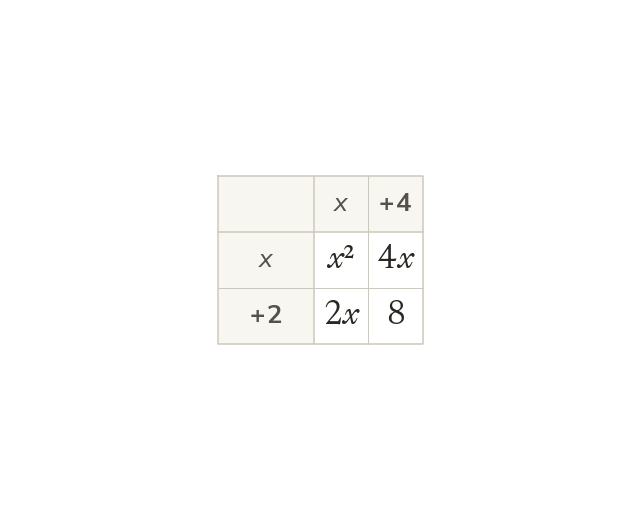

Every term by every term
Multiply every term in one bracket by every term in the other. That gives four products before collecting like terms.
Expanding double brackets multiplies every term in the first bracket by every term in the second. That gives four products before any like terms are collected.